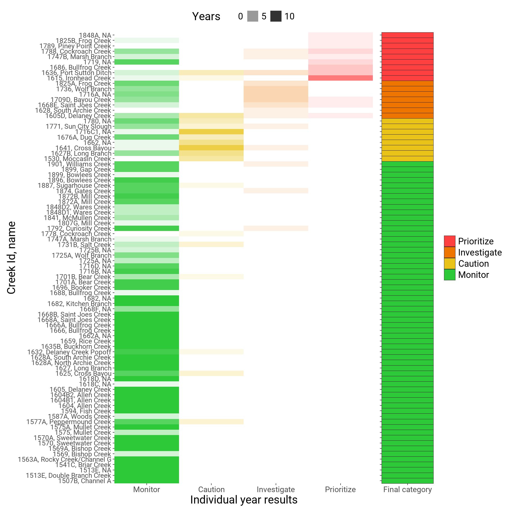

Tidal creeks or tributaries are essential habitats in the Tampa Bay estuary and are important focal points for understanding watershed inputs that affect water quality. A fundamental goal of the Tampa Bay Estuary Program is to develop effective nutrient management strategies to support the ecological function of tidal tributaries. In partnership with Sarasota Bay Estuary Program, Coastal & Heartland National Estuary Partnership, and local government and agency stakeholders, a tidal creek assessment framework was developed to evaluate the environmental health of these valuable ecosystems.
The tidal creek assessment framework supports tracking of water quality management goals and can help refine restoration and management plans in priority tributaries, including those in need of hydrologic restoration that can support critical nursery habitats for sportfishes. Similar to the water quality report card and nekton index, tidal creeks are assigned to different categories that describe current conditions and inform management actions that support protection or restoration of bay habitats.
Tidal creeks are assigned to one of five categories:
No Data: Data are unavailable for evaluation.
Monitor: Creek is at or below nitrogen concentrations that protect individual creek types within the larger population of creeks.
Caution: Creek nutrients showing signs of elevated nutrient concentrations that may increase risk of eutrophic condition.
Investigate: Creek nutrient concentrations above margin of safety to protect creek from potential impairment.
Prioritize: Creek nutrient concentrations have exceeded regulatory standard for associated freshwater portion of the tributary in at least one year indicating that actions may be needed to identify remediative measures to reduce nutrients in the creek.
The following map shows all tidal creeks in the Tampa Bay Watershed and their scores for the 2022 assessment period.
The current assessment period (2022) indicates that 11 creeks had a Prioritize score, 9 had an Investigate score, 8 had a Caution score, and 60 had a Monitor score. The remaining 141 creeks in the Tampa Bay watershed had insufficient data for the current assessment period to assign a category. The plot below shows a breakdown of scores for all creeks, with the final score in the right column and the number of survey years in each category used to calculate the final score in the remaining columns.

See additional visualization tools at the tidal creeks data page: https://tbep.org/tidal-creeks/